シェーディング属性
中級 アーティスト プログラマー
マテリアルのシェーディング属性は、マテリアルの色特性と、光に対する反応を定義します。
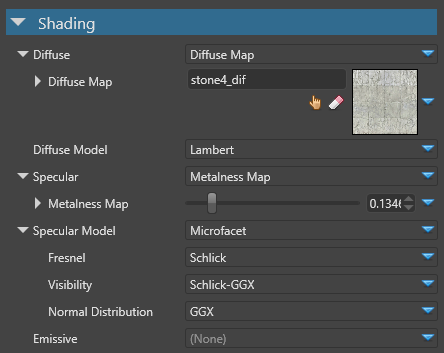
Note
マテリアルを表示するには、モデル属性で少なくとも 1 つのシェーディングモデル（拡散（diffuse）、鏡面反射（specular）、放射（emissive））を有効にする必要があります。
拡散（Diffuse）
拡散（diffuse） はマテリアルの基本色です。純粋な拡散マテリアルは、完全に無反射で、見た目も「フラット」です。
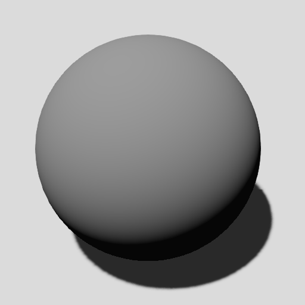
最終的な拡散の度合いは、次のように計算されます。
Diffuse は、拡散モデルで使われる色を定義します。
Diffuse model は、拡散コンポーネント（後述）のレンダリングでどのシェーディングモデルが使われるかを定義します。
今のところ、Diffuse 属性では 拡散マップ（Diffuse Map） だけがサポートされています。
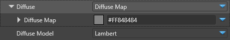
拡散モデル（Diffuse Model）
拡散モデル（Diffuse Model） は、拡散マテリアルが光に対してどのように反応するかを定義します。Lambert または cel-shading を設定できます。
ランバートモデル（Lambert model）
ランバートモデルでは、光はすべての方向に等しく反射され、その強度はコサインの角度分布（法線と光の角度）に従います。
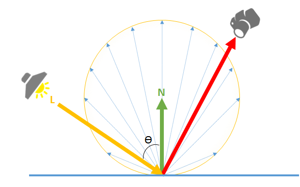
Note
純粋なランバートンマテリアルは、現実には存在しません。現実の物体は、常に若干の鏡面反射を持っています。この効果は、かすめ角でよりはっきりと現れます（拡散面の大半がかすめ角で光沢を帯びます）。
| プロパティ | 説明 |
|---|---|
| Diffuse map | 拡散マップカラープロバイダ |
| Diffuse model | 拡散光用のシェーディングモデル |
鏡面反射（Specular）
鏡面反射（Specular） は、マテリアルの中で反射する光の点です。

鏡面反射色は、メタルネスマップ（拡散色をベースカラーとする）や、鏡面反射マップ（鏡面反射色を拡散色とは別に定義する）を使って定義することができます。
メタルネスマップ（Metalness map）
メタルネスマップ（metalness map） を使うと、拡散色と鏡面反射色のパラメーター付けが簡単になります。
ほとんどすべての物体には必ず「金属感（metalness）」や反射率（relrectance）があることを考慮すると、メタルネスマップを使用することで、最小限のパラメーターでリアルなマテリアルを実現できます。
最終的な鏡面反射色は、固定された低反射（低リフレクション）色と拡散色を混ぜ合わせて算出されます。
メタルネス色を
0.0とすると、有効な鏡面反射色は0.02となり、拡散色は変化しません。このマテリアルは金属ではありませんが、若干の反射率を示し、フレネル効果の影響を受けます。メタルネス色を
1.0にすると、有効な鏡面反射色は拡散色と等しくなり、その拡散色は0になります。このマテリアルは、純粋な金属であるとみなされます。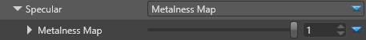
次のスクリーンショットは、以下の属性を持つマテリアルのメタルネス係数の結果を示しています。
- Gloss =
0.8 - Diffuse =
#848484, Lambert - Specular GGX
| 純粋な拡散（メタルネスなし） | Metalness = 0.0 |
Metalness = 1.0 |
|---|---|---|
| 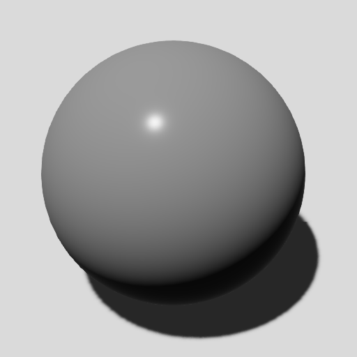 | 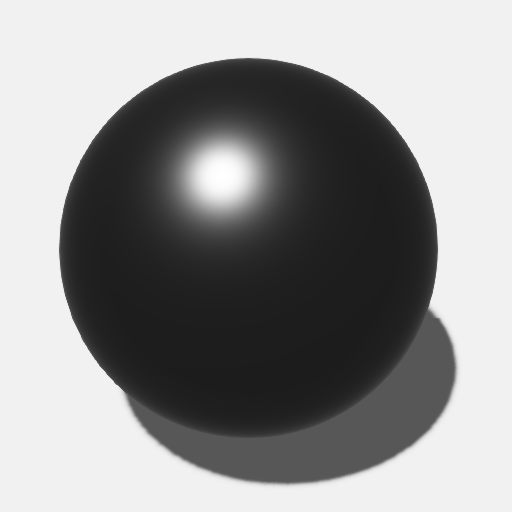 | |
| - T拡散色が圧倒的に強い | - 拡散色が圧倒的に強い | - 拡散色は見えない |
| - 鏡面反射色は見えない | - 鏡面反射色は見える（0.02） |
- 鏡面反射色は見える |
スペキュラーマップ（Specular map）
スペキュラーマップ（Specular map）を使うと、実際の鏡面反射色より細かくコントロールできますが、それに合わせて拡散色を変更する必要があります。
メタルネスのワークフローとは異なり、低反射（低リフレクション）の場合でも拡散色とは異なる鏡面反射色を設定することができ、特殊な挙動を持つマテリアルにも対応できます。
Note
独立したレイヤーを追加することで、メタルネスとスペキュラーのワークフローを同じマテリアルで組み合わせることができます。
スペキュラーモデル（Specular model）
純粋な鏡面反射は、鏡の方向に光のハイライトを生成します。実際には、完全に滑らかではない広範囲の鏡面反射マテリアルが、複数の方向に光を反射することがあります。Stride は、Cook-Torrance として知られているマイクロファセット（microfacet） モデルを使って、これをシミュレートします。
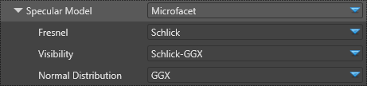
マイクロファセットは次の式で定義されます。ここで、Rs は結果として得られる鏡面反射率です。
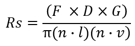
| プロパティ | 説明 |
|---|---|
| Fresnel | 反射・透過する光の量の割合を定義します。サポートされるモデルは以下の通りです。 Schlick：Schlick による近似値（既定） Thin glass：薄いガラスを通過する光のシミュレーション None：フレネル効果のない素のマテリアル |
| Visibility | マイクロファセット間の可視性を (0, 1) の範囲で定義します。また、オリジナルの Cook-Torrance の論文では幾何減衰（Shadowing と Masking）として知られています。Stride ではこの式を簡略化し、代わりに Visibility 項を使用しています。 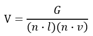 そして 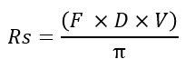 Schlick GGX（既定）： Implicit：マイクロファセットは常に表示され、Shadowing や Masking は発生しません。 Cook-Torrance： Kelemen： Neumann： Smith-Beckmann： Smith-GGX correlated： Schlick-Beckmann： |
| Normal Distribution | 法線の分布の仕方を定義します。gloss 属性は、この関数のこの部分で、法線の分布を変更するために使用されます。 GGX（既定）： Beckmann： Blinn-Phong： |
放射（Emissive）
放射（emissive） マテリアルとは、光を発する表面のことです。
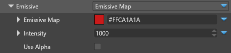
HDR、Bloom、明度フィルター のポストプロセッシングエフェクトで、放射マテリアルの影響を見ることができます。
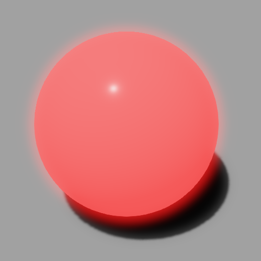
| プロパティ | 説明 |
|---|---|
| Emissive map | 放射マップカラープロバイダー |
| Intensity | カラープロバイダーの色に乗じる係数 |
| Use alpha | 放射マップのアルファ値をマテリアルのメインアルファ色として使用する（既定では拡散マップのアルファ値を使用する） |